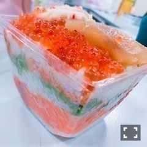

| 2016/12 03 Sat | 斎藤ちはる じゃんけん！？ |
ちはるーむへようこそ！
自撮りしてたら
後ろでまあやがピースしてきた(﹡ˆ ˆ﹡)
振り返って、まあや〜！と言ったら
「え〜！気付いてたの！？」と言われました笑
逆に、気付いてないと思ってたの...！？( ´ ▽ ` )
可愛すぎるまあや♡
イヤリングが、パーで
まあやの手が、チョキだから
じゃんけんしてるみたい(_ _).｡o○
面白い(_ _).｡o○
----------------------------♡
◎Chihafood◎
今日は、収録の時に食べた
お弁当が美味しすぎたので...！
そのお弁当を紹介します。
「創作鮨処タキモト」さんの、
是非ミルフィーユ丼！！
お弁当なのに、ミルフィーユ？
と思うと思いますが、
なんと色んな海鮮とご飯が
ミルフィーユのように重なっているのです！

いくらに数の子、カニに明太子...
海鮮好きには堪らないお弁当で
メンバーにも大人気でした。
食べ進めていくうちに
色々な味が出てくるので食べてて飽きないし
何が出てくるんだろう！とワクワクしながら
楽しんで食べられます♪
一見小さく見えるのですが、
とてもぎっしり詰まっていてボリューム満点！
男性にはぴったりだと思います！
大丸東京で買えるらしいので
仕事等で東京駅に寄った時や
新幹線で東京に来る時、
東京から新幹線で何処かへ向かう時！
海鮮好きの皆さん、お昼に如何ですか♪
----------------------------♡
♬ ChihaMusic
「真夏の果実」サザンオールスターズさん
真夏の曲だけど、
真冬にも聞きたくなる。
切なくて心落ち着く曲。
"泣きたい気持ちは 言葉に出来ない
今夜も冷たい雨が降る"
どうしようもなく、
なにがどうとかじゃないけど
涙が出る時ってわたしはよくあるんだ。
涙が出る時はひとりぼっちな
気がしちゃうけど、
1人じゃないことを
思い出さなきゃいけないね。
桑田さんの曲は本当いい曲ばかりだなぁ
かりんと\( ˆ ˆ )/
私、笑いすぎてる...
かりんの夢の国のお家に
ずーーっと行きたいとずーーっと思ってる。
いつお邪魔しちゃおうかな〜♪
昨日のブログの衣装当てクイズ、
答え合わせ〜◎
正解は...
なーちゃん: 制服のマネキン
まあや: 13日の金曜日
私: 涙がまだ悲しみだった頃
です！！
コメントを読んでいると
全て合ってる方も多くてびっくりしました！
でも最近ファンになった方や
ライブにあんまり来れない方には
少し難しかったみたい(> <)
クイズ出すの楽しかったので
また何か出そうかな〜♪
おやすみ！
斎藤ちはる